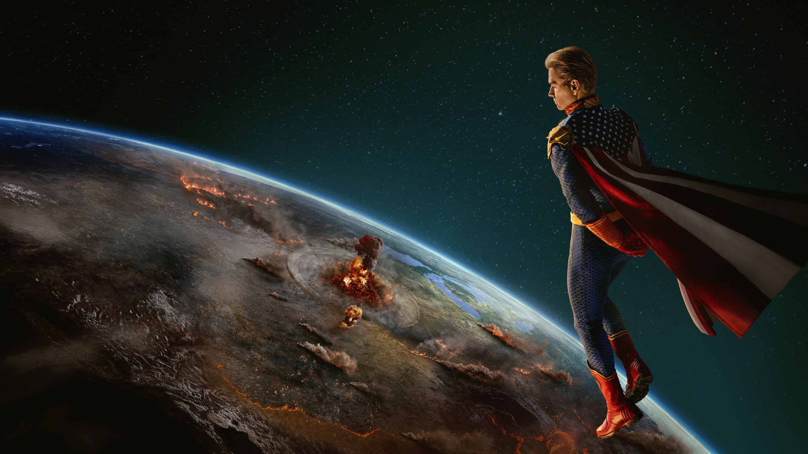
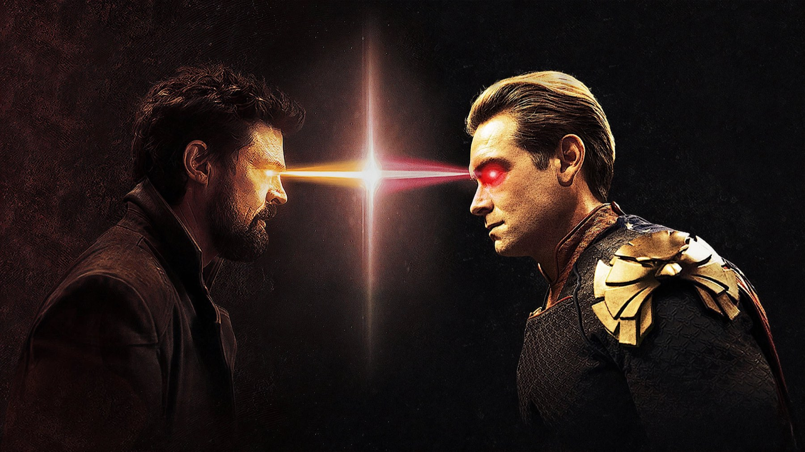
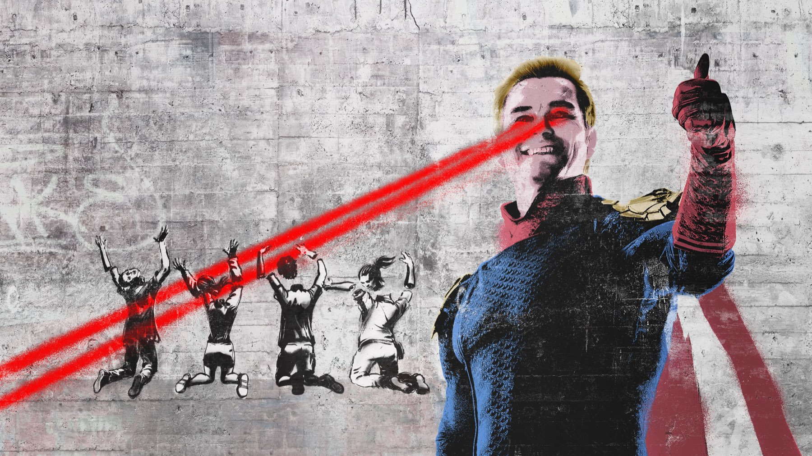
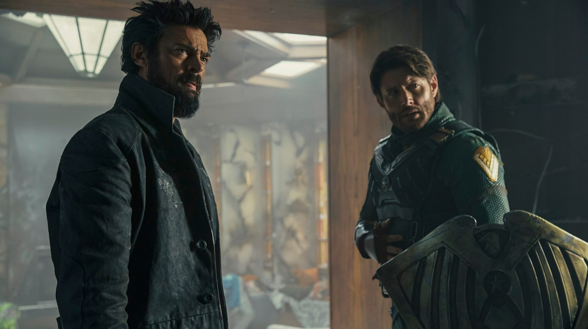

The Boys – Stagione 5
Homelander al potere, Butcher con un'ultima arma e otto episodi per chiudere tutto: la fine di The Boys è feroce, cupa e sbilanciata
Sette anni fa Prime Video ci ha presentato dei supereroi che non avremmo mai voluto incontrare, e un gruppo di disperati deciso a smascherarli. Il 20 maggio 2026, con l'episodio Blood and Bone, The Boys ha chiuso i conti. Lo ha fatto come aveva sempre promesso: senza pietà, senza buon gusto e senza un lieto fine di comodo. Ma anche, dobbiamo ammetterlo, con un po' di fiato corto.
La quinta e ultima stagione è stata accolta bene dalla critica, molto meno da una parte del pubblico, che sul finale si è spaccata. Proviamo a capire cosa ha funzionato e cosa no, senza spoiler.
Di cosa parla la quinta stagione di The Boys?
La storia riparte circa un anno dopo la fine della quarta stagione. Homelander ha preso il controllo totale del paese e governa secondo i suoi capricci, Starlight prova a tenere in piedi una resistenza che sembra senza speranza e di Butcher si sono perse le tracce. Quando ricompare, ha con sé un virus capace di cancellare tutti i Super dalla faccia della Terra, e una gran voglia di usarlo.
Lo showrunner Eric Kripke ha sempre detto di avere in mente questa stagione fin dall'inizio, definendola la versione della serie dell'apocalisse. Le riprese si sono svolte tra il 25 novembre 2024 e il 1° luglio 2025, e gli otto episodi sono usciti su Prime Video dall'8 aprile 2026, i primi due insieme e poi uno a settimana. Torna tutto il cast storico, da Karl Urban ad Antony Starr, da Jack Quaid a Erin Moriarty, con il ritorno di Jensen Ackles nei panni di Soldier Boy e una new entry di peso: Daveed Diggs, che interpreta Oh Father.

Homelander è ancora il cuore della serie?
Sì, e forse non è mai stato così spaventoso. Antony Starr porta il personaggio al punto più alto e più buio: non più soltanto un eroe instabile, ma un dittatore che si crede un messia. Francesca Sirtori su VGmag lo definisce proprio così, e ha ragione: in questa stagione Homelander è la satira dell'America contemporanea fatta persona, e Starr riesce a renderlo ridicolo e terrificante nella stessa inquadratura.
Dall'altra parte c'è Karl Urban, il cui Butcher è sempre più consumato dalla rabbia. Le sue scene migliori non sono quelle d'azione, ma quelle più intime, in cui la maschera del duro cede e resta un uomo distrutto. Nate Richard su Collider, che assegna un 9 su 10 dopo aver visto sette episodi su otto, loda poi il rapporto tra Homelander e Soldier Boy: Ackles e Starr hanno un'alchimia irresistibile, e ogni loro scontro verbale vale da solo l'episodio. Bene anche Diggs, un'aggiunta che si inserisce alla perfezione nel mondo della serie.
Non più un eroe instabile, ma un dittatore che si crede un messia: Homelander non è mai stato così spaventoso.
Cosa funziona nella stagione finale
La satira, prima di tutto. The Boys non ha mai fatto finta di parlare d'altro, e in questa stagione mette nel mirino il fanatismo religioso trasformato in arma politica e la deriva autoritaria di un paese che si inchina all'uomo forte. È il tema più esplicito di sempre, e la serie lo maneggia con la consueta mancanza di freni: violenza estrema, umorismo nerissimo, momenti volgari fino al limite del sopportabile.
Funzionano anche alcuni archi emotivi. Per Collider la storia d'amore tra Frenchie e Kimiko è il cuore pulsante della stagione, e persino le recensioni più severe riconoscono almeno un paio di momenti capaci di colpire davvero, anche chi è abituato ai massacri della serie. Infine c'è il coraggio della chiusura: senza rivelare nulla, The Boys rifiuta l'epilogo rassicurante o eroico, e sceglie un finale sporco, ambiguo e coerente con il pessimismo che l'ha sempre animata.

Perché il finale ha diviso?
Il problema più citato è il tempo. Otto episodi non bastano a chiudere tutte le storie aperte, e lo si sente soprattutto nell'ultima mezz'ora, che VGmag definisce un po' compressa. Alcuni personaggi restano ai margini: Hughie, A-Train e Mother's Milk hanno i loro momenti, ma meno spazio di quanto meritino, e i volti arrivati dallo spin-off Gen V vengono introdotti e poi lasciati in disparte.
La voce italiana più severa è quella di Luciano Moscariello su Everyeye, che dà 5 su 10 e parla di una serie che, invece di correggere i difetti storici, li amplifica proprio nel momento della resa dei conti. Tra le accuse: una trama che avanza a fatica, personaggi che si contraddicono da un episodio all'altro e quasi due puntate spese a preparare il terreno per lo spin-off Vought Rising. Una parte della critica americana lamenta lo stesso ritmo lento, mentre Sirtori osserva che certi eccessi sembrano pensati più per diventare virali sui social che per servire la storia.
Il pubblico è stato ancora più duro. Su Rotten Tomatoes il gradimento degli spettatori per il finale si è fermato al 52%, e a fine maggio 2026 l'ultimo episodio e il penultimo risultavano i meno votati della serie su IMDb, con 5,8 e 5,9, dopo anni di puntate sempre sopra il 7.

Vale la pena vederla?
Se avete seguito The Boys fin qui, sì: è la conclusione naturale di una delle serie più irriverenti degli ultimi anni, con un Antony Starr in stato di grazia e qualche scena che resterà tra le più forti dell'intera saga. Mettete però in conto una stagione meno travolgente delle prime, più lenta a ingranare e più frettolosa nel finale. La critica l'ha promossa, con il 92% di recensioni positive su Rotten Tomatoes e 75 su 100 su Metacritic (dati di ottobre 2026); noi la promuoviamo con riserva. Tutte e cinque le stagioni sono disponibili su Prime Video.
Se da un lato The Boys 5 corre troppo nel finale, sacrifica diversi personaggi e spende tempo prezioso per preparare gli spin-off, dall'altro regala un Homelander terrificante, una satira feroce e una chiusura cupa e coerente. Un addio imperfetto, ma fedele a se stesso.
Domande frequenti
Quanti episodi ha la quinta stagione di The Boys?
Otto, usciti su Prime Video dall'8 aprile al 20 maggio 2026; l'ultimo si intitola Blood and Bone.
The Boys 5 è l'ultima stagione?
Sì, la quinta è la stagione finale della serie. Il mondo di The Boys prosegue con lo spin-off Vought Rising.
Dove vedere The Boys?
Tutte e cinque le stagioni sono su Prime Video, incluse nell'abbonamento.
Fonti consultate (8)
- Wikipedia – The Boys season 5
- Collider – The Boys Season 5 review (Nate Richard)
- Collider – The Boys finale, i voti del pubblico
- Everyeye Serial – The Boys 5, recensione (Luciano Moscariello)
- VGmag – The Boys 5, recensione (Francesca Sirtori)
- Rotten Tomatoes – The Boys season 5 first reviews
- Variety – The Boys final season trailer
- JustWatch – The Boys stagione 5